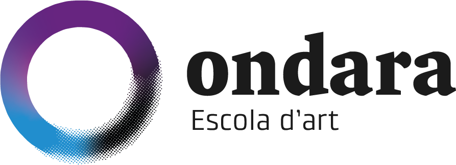

2n de Batxillerat Artístic
Què volem compartir avui?
El curs
Com afrontem 2n i què implica aquest últim curs de Batxillerat.
L'acompanyament
Com fem el seguiment, com ens comuniquem i quin paper té la família.
El que ve després
Com plantegem l'orientació i quines opcions tenen al final de 2n.
2n és un curs de consolidació
Primer objectiu: el primer trimestre
Al setembre no volem que l'alumnat visqui el curs com una cursa cap al final. El primer objectiu és fer un bon primer trimestre, consolidar ritmes i detectar necessitats.
Després, obrir el focus
A partir de gener, l'orientació cap al curs següent s'intensifica de manera gradual però ferma, sense perdre de vista l'exigència acadèmica de 2n.
Dos itineraris, una mateixa mirada artística
Plàstiques, imatge i disseny
Un itinerari orientat al desenvolupament del pensament visual, la pràctica artística, el disseny i els llenguatges gràfico-plàstics.
Arts escèniques
Un itinerari centrat en la pràctica escènica, la veu, la literatura dramàtica i els llenguatges de l'escena.
Com s'organitza 2n?
Matèries comunes
Obligatòries de modalitat
Matèries de modalitat
Fer seguiment abans d'arribar al final
Procés
El treball quotidià i l'evolució tenen un paper important, especialment en les matèries artístiques.
Resultats
Exàmens, projectes, exercicis i altres evidències d'aprenentatge segons cada matèria.
Reacció a temps
Quan apareix una dificultat, és millor intervenir durant el curs que esperar a l'últim moment.
Família ↔ centre
Gescola
Gescola és el canal de comunicació amb les famílies.
- Informacions del centre.
- Comunicacions relacionades amb l'alumnat.
- Seguiment quan sigui necessari.
Quan cal contactar?
Davant d'una dificultat acadèmica, personal o d'organització que pugui afectar el curs, és preferible comunicar-la aviat.
La comunicació és una eina d'acompanyament, no només de resposta a problemes.
Primer, fer un bon 1r trimestre.
Des de l'Ondara plantegem l'orientació de manera progressiva: primer consolidem el curs i, a partir de gener, iniciem amb més intensitat el procés de presa de decisions.
Posar el focus en el curs
Treballar, conèixer el punt de partida de cada alumne/a, consolidar hàbits i fer un bon primer trimestre.
Orientació gradual però ferma
Informació, reflexió i presa de decisions mitjançant orientació grupal i individual.
No hi ha un únic camí
Les dates que convé tenir al radar
El tram final del curs
PAU · juny 2027
Ordinària: 1, 2 i 3 de juny.
Tribunal especial / incidències: 8, 9 i 10 de juny.
Extraordinària: 6, 7 i 8 de juliol.
ESDAPC
La prova específica d'accés encara no té data fixada per al 2027.
Com a orientació, habitualment se situa a la primera o segona setmana de juny.
Quan es publiqui la convocatòria, caldrà consultar la data oficial.
Acompanyar sense substituir
🕰️ Hàbits
Afavorir rutines, descans i temps de treball.
🧭 Autonomia
Donar responsabilitat a l'alumne/a sobre el seu propi procés.
💬 Comunicació
Compartir amb el centre les dificultats que puguin afectar el curs.
Sortides i activitats
Barcelona · Mercat de les Flors
Dijous, 3 de desembre de 2026
Sortida de Batxillerat
Barcelona · Germans de sang
Dijous, 3 de desembre de 2026
Sortida de Batxillerat
Guissona · Bolo
Dijous, 25 de febrer de 2027
Batxillerat
Sortides i activitats
Guissona · Bolo
Divendres, 26 de febrer de 2027
Només Arts Escèniques
Madrid · Projecte de sortida
3–5 de març de 2027
No és segur; s’està valorant.
Jornada d’intercanvi teatral
Dijous, 8 d’abril de 2027
1r + 2n Batxillerat · AESC · només Arts Escèniques
Dubtes i informacions pendents
Codis dels llibres
Català i castellà: en principi, els codis ja estan resolts.
Accés a l’Institut del Teatre
L’Institut del Teatre ha arribat a un acord amb la UB perquè sigui grau universitari, i és possible que es demani superar les PAU.
Encara no hi ha informació oficial clara. Us ho farem saber quan es concreti.
Llibres que no apareixien al llistat
Se n’ha afegit un només. Actualitzaré aquesta mateixa pàgina entre avui i demà amb les referències exactes, ja que en aquests moments no les tinc.
Workbook d’anglès · compra i accés
Què és?
És un llibre digital, no físic, i es compra a part del llibre físic teòric.
Codi: 9789925361229
Com comprar la llicència
1. Registrar-se a Burlington Books →
Nom, cognom, seleccionar Alumnado, email i codi postal del centre: 25300. Després, seleccionar Escola d’Art Ondara.
2. Entrar a MIS LIBROS →, escollir el curs i comprar la llicència del Workbook.
Si ja us vau registrar el curs passat: només cal accedir amb l’email i la contrasenya.
Parlem quan calgui
Gescola
És el canal de referència per a la comunicació habitual amb les famílies, avisos i seguiment del curs.
2n és un final d’etapa, però sobretot és un pas cap al que ve després.
El nostre objectiu és arribar al final de curs amb un alumnat que hagi crescut en autonomia, criteri i confiança per prendre la seva pròxima decisió.
Gràcies per la vostra confiança.
Preguntes i conversa amb les famílies